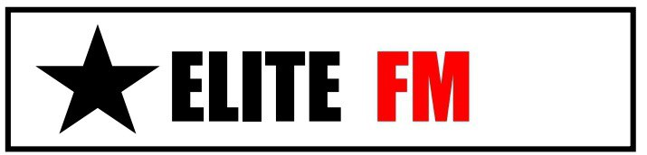
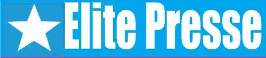

Nos Emissions
Elite TV
Nous émettons 24h sur 24, 7 jours sur 7. Dans notre grille de programme, nous avons 3 émissions clés qui sont: « Votre avis pour construire », une émission socio-politique; « L’avenir est à vous », une émission ludique pour les enfants; Et « Découverte tous azimuts », une émission multiculturelle qui s’adresse à tout public.
Elite Radio 
Nous émettons sur la 94.0 et nos programmes sont aussi disponibles en streaming sur notre site web « Elite ». Nous avons une équipe qui nous permet de faire du 7 jours sur 7 avec des productions diverses et variées en studio ou hors studio. Nous avons 3 grandes éditions de journal, toutefois, au cours de la journée, des flashs permettent d’actualiser nos informations à l’endroit de nos auditeurs.
Elite Presse 
Notre journal est intitulé Élite Presse. C’est un hebdomadaire d’informations générales publié chaque jeudi. Nous faisons 50 exemplaires par tirage et le journal est vendu à 250 francs l’unité.